Build distinctive, production-grade web interfaces with a strong aesthetic point-of-view — not generic AI slop.
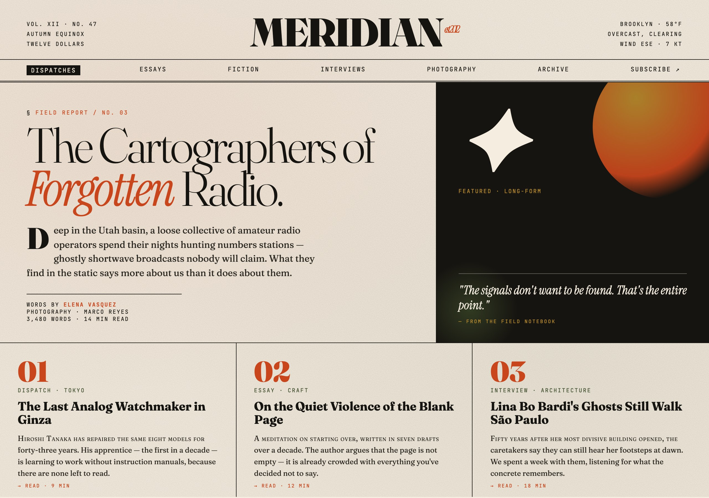
Use this when...
- You're building a landing page, marketing site, or hero section and the default "Inter on white with purple gradients" aesthetic is unacceptable
- You need a component, dashboard, or admin panel that actually commits to a visual identity (editorial, brutalist, retro-futuristic, etc.)
- You're tired of AI-generated UI that all looks the same and want Claude to pick a bold direction and execute it with precision
- You have a vague vibe in mind ("something that feels like a print magazine" / "cyberpunk terminal" / "soft pastel wellness app") and want it turned into working code
- You're implementing an approved mockup and want the final code to keep the distinctiveness instead of sanding it down to defaults
What you say to Claude
Build a landing page for a small-batch coffee roaster.
I want an editorial magazine feel — not another minimal SaaS site.
Distinctive display font, warm paper background, commit to it.
Claude picks a conceptual direction (tone, typography, palette, layout), loads distinctive Google Fonts, and writes real HTML/CSS/JS (or React/Vue) with thoughtful spacing, animation, and typographic detail — no Inter, no purple gradients, no cookie-cutter hero sections.
Install
# From the claude-toolkit repo
./install.sh --skills frontend-design # into current project
./install.sh --global --skills frontend-design # into ~/.claude (all projects)
After install, Claude invokes this skill automatically when you ask for frontend work — landing pages, components, dashboards, marketing sites. You can also trigger it explicitly with "use the frontend-design skill to...".
New to skills? See the main README for a one-minute primer.
What you'll see
- A committed aesthetic direction — brutalist, editorial, retro-futuristic, soft organic, industrial — not a blend of all of them
- Distinctive typography — a display font paired with a refined body font, usually from Google Fonts, never Inter or Arial
- Intentional color — dominant tones with sharp accents instead of timid, evenly-distributed palettes
- Spatial composition with character — asymmetry, overlap, grid-breaking, generous negative space or controlled density
- Production-grade code — real working HTML/CSS/JS that you can ship, not screenshot-only mockups
The hero above is an example the skill produced for a fictional magazine called Meridian — Fraunces display type, cream paper background, rust-and-moss palette, sun/moon abstract, three-column bottom row. That's the quality bar.
See also
ux-mockup— for iterating on design with stakeholder feedback before you commit to implementationtesting-webapps— for visually verifying the built result matches the design intent
Generate self-contained HTML mockups with built-in feedback collection, version history, and mobile/desktop toggle — for designers iterating with stakeholders.
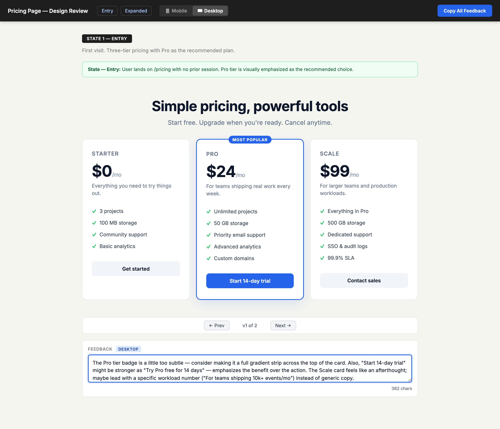
Use this when...
- You're redesigning a page and need non-technical stakeholders to leave feedback without Figma accounts, logins, or setup
- You want feedback anchored to specific sections — not vague "I don't like the header" messages in Slack
- You want to iterate on an existing live page without touching the real codebase
- You need a single HTML file you can email or drop in a shared folder, not a hosted prototype with auth
- You need to compare multiple versions side-by-side while collecting feedback on each one
What you say to Claude
Mock up the new pricing page with three tiers (free, pro, scale).
I want to show it to two stakeholders and collect their feedback.
Claude generates a single HTML file at docs/mockups/pricing.html, opens it in your browser, and you send the link or the file itself to reviewers. They type feedback into each section's textarea and click Copy All Feedback to get a JSON blob they paste back into the chat.
For iterating on an existing live page:
Mock up changes to the /dashboard page — start by capturing
what's there now, then propose a denser layout as v2.
Install
# From the claude-toolkit repo
./install.sh --skills ux-mockup # into current project
./install.sh --global --skills ux-mockup # into ~/.claude (all projects)
After install, Claude will invoke this skill automatically when you mention "mockup", "design review", or "mock up the flow". You can also trigger it explicitly with phrases like "use the ux-mockup skill to...".
New to skills? See the main README for a one-minute primer.
What you'll see
The generated HTML file is fully self-contained (no CDN, no build step, works offline) and includes:
- Per-section feedback textareas — every design section gets its own comment box
- Version history nav — prev/next buttons flip between v1, v2, v3... of the same section
- Mobile/desktop toggle — swap the whole page between 375px and full-width
- Copy All Feedback button — exports every textarea as timestamped JSON to the clipboard
- Design-note callouts — yellow "Change:", blue "Future:", green "Info:" boxes for reviewer context
Reviewers don't install anything. They open the file, read, type, click Copy All Feedback, and paste the JSON back to you.
The two modes
From-scratch mode — for new pages or components with no existing reference. Claude designs the layout, applies project CSS if available, and generates v1. You iterate by telling Claude what to change, and v2 is added to the same file with the nav auto-showing.
Live-capture mode — for reviewing and iterating on a page that already exists. Claude embeds the actual live page in an iframe (if publicly accessible), or extracts the real HTML and styles from your project source (for auth-protected or dynamic pages). The key rule: never approximate what you can embed or extract. A hand-drawn reconstruction that looks "close enough" defeats the purpose — reviewers need to see exactly what users see.
See also
qa-checklist— same feedback-collection pattern, but for manual QA testing after a PRfrontend-design— for implementing the approved design once feedback converges
Generate an interactive manual-QA checklist as a self-contained HTML page after a PR lands — with pass/fail/skip buttons, per-test notes, and clipboard export back into chat.
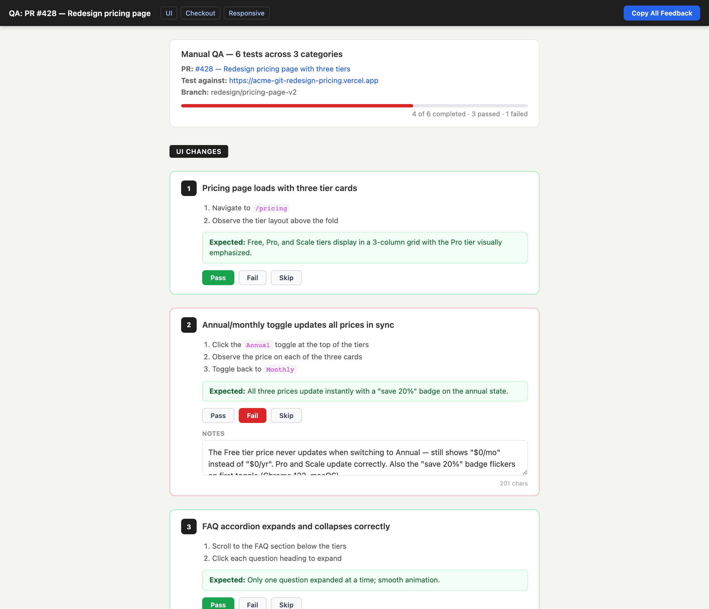
Use this when...
- You just opened a PR and need to manually verify the parts your automated tests can't cover (visual, responsive, flows, real API behavior)
- You want a single HTML file per PR you can open in a browser, click through, and attach to the PR description when you're done
- You need a non-developer teammate to test a preview deployment without teaching them your test framework
- You want QA results to come back as structured JSON you paste into chat, not a wall of Slack messages
- You want Claude to read the PR diff and tell you what to test instead of writing the checklist yourself
What you say to Claude
I just opened PR #428 for the pricing page redesign.
Generate a QA checklist for the manual stuff the e2e tests won't catch.
Claude runs gh pr view, reads the diff and existing tests, finds the Vercel preview URL, and writes a self-contained HTML file to docs/qa/428-pricing-redesign.html. It opens in your browser automatically. You click through, mark each test pass/fail/skip, add notes, and hit Copy All Feedback to paste the results back into the conversation.
Install
# From the claude-toolkit repo
./install.sh --skills qa-checklist # into current project
./install.sh --global --skills qa-checklist # into ~/.claude (all projects)
After install, Claude invokes this skill automatically when you mention "qa checklist", "manual testing", "what should I test", or right after a PR is created. You can also trigger it explicitly with "use the qa-checklist skill to...".
New to skills? See the main README for a one-minute primer.
What you'll see
The generated HTML file is fully self-contained (no CDN, no build step) and includes:
- Sticky nav with category anchor links and a Copy All Feedback button
- Summary banner showing PR title, preview URL, branch, and a live progress bar
- Numbered test cards grouped by category (UI, API, responsive, etc.) with concrete steps and expected results
- Pass / Fail / Skip buttons per test that color the card border and update progress
- Per-test notes textareas for describing what you actually observed
- JSON export via clipboard — a structured summary of passed/failed/skipped tests plus notes, ready to paste back to Claude
See also
ux-mockup— same feedback-collection pattern, but for design review before a PR is even writtenmanual-qa-collab— for driving the browser yourself with Playwright instead of handing the checklist to a human
Route web-app testing to the right tool — Claude for Chrome when judgment matters, Playwright when you need deterministic assertions.
| Scenario | Tool | Why |
|---|---|---|
| "Does this look right?" | Chrome | Visual judgment needed |
| "Check console errors" | Chrome | Live debugging |
| "Why is this broken?" | Chrome | Interactive debugging |
| "Compare to Figma" | Chrome | Visual comparison |
| "Run on every PR" | Playwright | CI/CD integration |
| "Test Safari + Firefox" | Playwright | Cross-browser |
| "Performance testing" | Playwright | Precise measurements |
Use this when...
- You're testing a UI change and aren't sure whether to click around in Chrome or write a Playwright script — the table above picks for you
- You need to visually verify something ("does this match Figma?", "does the modal feel right?") and want Claude driving a real browser
- You just fixed a bug and want to lock it in with a regression test before merging
- You need cross-browser or headless CI testing and don't want to reinvent the Playwright setup
- A Playwright test is failing mysteriously and you want Claude to jump into Chrome to debug it interactively
What you say to Claude
Test the checkout flow on localhost:3000.
Start in Chrome so I can see it work, then codify the
happy path as a Playwright test I can run in CI.
Claude starts in Chrome (visual pass, console check, exploratory clicks), confirms the flow works, then writes a Playwright script using the ready-to-use test_template.py and with_server.py helpers in the skill. You run it locally, drop it into CI, and the bug can never come back silently.
Install
# From the claude-toolkit repo
./install.sh --skills testing-webapps # into current project
./install.sh --global --skills testing-webapps # into ~/.claude (all projects)
After install, Claude invokes this skill automatically when you mention testing a webapp, checking UI, debugging a page, or writing browser tests. You can also trigger it explicitly with "use the testing-webapps skill to...".
New to skills? See the main README for a one-minute primer.
What you'll see
- A tool choice, not a tool lecture — Claude picks Chrome or Playwright based on the scenario and tells you why in one line
- Chrome sessions for visual verification, console inspection, and exploratory testing where human judgment matters
- Playwright scripts using the bundled
test_template.pyandwith_server.py(starts a dev server, runs tests, cleans up) for repeatable assertions - A build → test → codify → debug loop — Chrome to discover, Playwright to lock in, Chrome again when tests fail unexpectedly
- Reference docs bundled — playwright-patterns.md for auth/forms/mocking and ci-cd-integration.md for GitHub Actions setup
See also
manual-qa-collab— collaborative step-by-step QA walkthroughs when you want a human in the loop per stepqa-checklist— generate a post-PR manual QA checklist when automated tests can't cover everything
Spawn 10 parallel agents with distinct cognitive framings, then surface the Mode (convergent high-confidence picks) and Outliers (creative single-agent ideas) — for strategic decisions where both safe bets and wild cards matter.
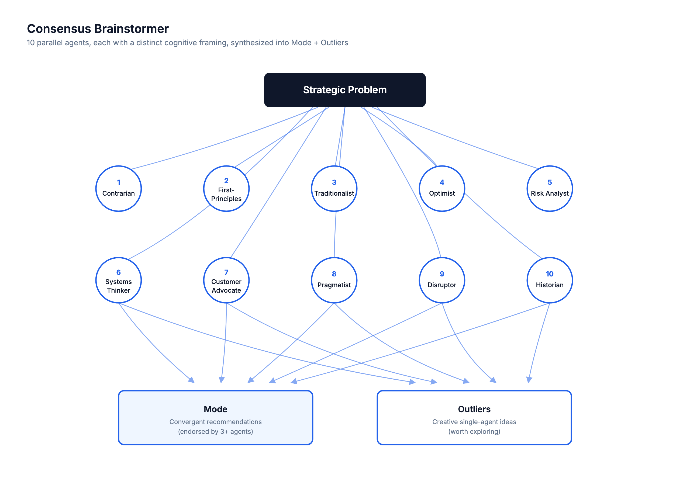
Use this when...
- You're making an architecture or product-strategy decision and a single perspective keeps missing things
- You want both the safe play and the creative wildcard in one pass — not averaged into mush
- You suspect groupthink is shaping the current proposal and you want adversarial lenses (Contrarian, Risk Analyst, Disruptor) stress-testing it
- You need to justify a call to stakeholders and want to show "10 independent perspectives converged on X"
- You're evaluating 3-5 viable options and want to know which one has the broadest support across reasoning styles
What you say to Claude
Brainstorm with consensus: should we rewrite the payments service
in Go, or keep patching the existing Node version?
We have a 2-person backend team and 6 weeks.
Claude clarifies constraints, then fans out 10 Sonnet agents in parallel — each primed as a different persona (Contrarian, First-Principles, Traditionalist, Optimist, Risk Analyst, Systems Thinker, Customer Advocate, Pragmatist, Disruptor, Historian). Each returns a top-3 recommendation list. Claude then synthesizes the results itself (not a delegated agent) into Mode, Clusters, and Outliers.
For lower-stakes decisions, add "quick" to use 5 agents. For high-stakes, add "deep" to run 3 adversarial follow-ups that try to break the top Mode picks.
Install
# From the claude-toolkit repo
./install.sh --skills consensus-brainstormer # into current project
./install.sh --global --skills consensus-brainstormer # into ~/.claude (all projects)
After install, Claude invokes this skill automatically when you say "brainstorm with consensus", "multi-agent analysis", or "get multiple perspectives on". You can also trigger it explicitly with "use the consensus-brainstormer skill to...".
New to skills? See the main README for a one-minute primer.
What you'll see
- Mode section — high-confidence recommendations endorsed by 3+ of 10 agents, ranked by endorsement count, with the framings that agreed
- Clusters section — moderate-signal ideas backed by exactly 2 agents (worth considering, need more validation)
- Outliers section — creative single-agent ideas with a "potential value if correct" note (preserved explicitly, never averaged away)
- Tensions & Trade-offs — places where agents directly contradicted each other, which usually reveal the real decision
- Recommended Next Steps — 2-3 concrete actions drawn from the synthesis
See also
debate-chamber— when you've got a Mode from this skill but want to stress-test it through 3 rounds of iterative argumentresearch-orchestrator— when the problem needs external information first (web research across axes), not just reasoning
5 debaters argue across 3 sequential rounds — opening, critique, synthesis — then a Team Lead converges the full transcript into a unified implementation plan. For problems where the first answer is rarely the best answer.
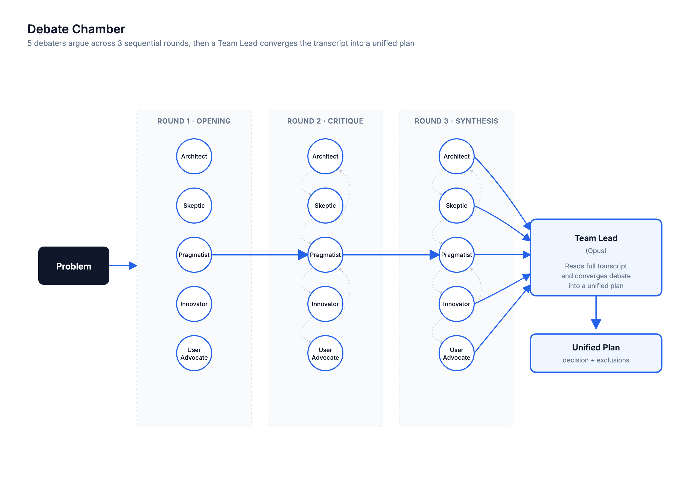
Use this when...
- You have an implementation plan and you want trade-offs argued through, not just listed
- The first proposed design feels right but you don't trust it yet — you want it attacked and refined
- You want ideas to collide and improve rather than just be collected in parallel
- You've already run a consensus brainstorm and want to stress-test the Mode through iterative debate
- The decision has genuine trade-offs and the cost of being wrong justifies a slower, deeper process
What you say to Claude
Debate this: we need a rate-limiting strategy for our public API.
Options on the table are token bucket, fixed window, and sliding log.
Argue through it and give me a plan.
Claude clarifies constraints, then runs Round 1 (5 debaters post opening positions independently — no cross-talk, prevents herding), Round 2 (each debater sees the full Round 1 transcript and must attack the weakest proposal + steal the best idea from another debater), and Round 3 (synthesis — each debater produces a final refined position). Then a single Opus Team Lead reads the complete transcript and produces a decision, a plan, and a "What We're NOT Doing" list.
Add "quick" for 3 debaters × 2 rounds, or "deep" for a 4th adversarial round that tries to break the Team Lead's draft plan.
Install
# From the claude-toolkit repo
./install.sh --skills debate-chamber # into current project
./install.sh --global --skills debate-chamber # into ~/.claude (all projects)
After install, Claude invokes this skill when you say "debate this", "argue through", or "adversarial debate". You can also trigger it explicitly with "use the debate-chamber skill to...".
New to skills? See the main README for a one-minute primer.
What you'll see
- Decision Summary — 2-3 sentences stating what was chosen and why (a decision, not a hedge)
- The Plan — numbered actionable steps, each tagged with which debater argued for it and the key risk identified during debate
- What We're NOT Doing (and Why) — ideas that were proposed and explicitly rejected, with revisit conditions
- Open Questions — genuine uncertainties the debate surfaced but couldn't resolve
- Debate Scorecard — each debater's best contribution and biggest blind spot
Consensus vs Debate — which one?
| Dimension | consensus-brainstormer | debate-chamber |
|---|---|---|
| Agent interaction | Independent, no cross-talk | Iterative, agents respond to each other |
| Rounds | 1 (parallel) | 3 sequential + convergence |
| Strength | Breadth of ideas, outlier discovery | Depth of analysis, idea refinement |
| Speed | Faster (1 parallel dispatch) | Slower (3 sequential rounds) |
| Best for | "What are our options?" | "Which option is best and why?" |
See also
consensus-brainstormer— when you need breadth and outliers first, before picking something to debateresearch-orchestrator— when the debate needs external data to be productive (pull findings first, then argue)
Fan out 5 parallel Sonnet research agents across distinct axes, accumulate their findings to a file, then fan in with a single Opus synthesizer that deduplicates, confidence-weights, resolves conflicts, and writes the final report.
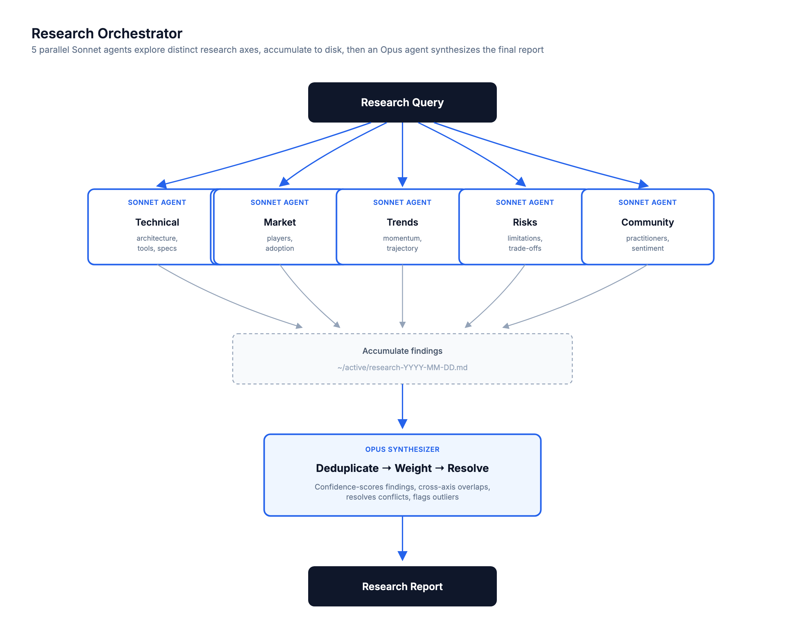
Use this when...
- You need multi-perspective research on a topic and a single web search won't cut it — you want Technical, Market, Trends, Risks, and Community angles simultaneously
- You're doing a competitive analysis or technology evaluation and need a report you can paste into a doc, not a chat-thread of findings
- You want source-cited findings with confidence scores — not a vibes-based summary
- You want parallel agents to run in the background while you keep working, getting notified as each completes
- You care about cross-axis corroboration — findings that showed up independently in 2+ axes are the ones you can actually trust
What you say to Claude
Research this: what are the best approaches to building AI agents
in 2026? I want to know the frameworks people are actually shipping,
the common failure modes, and where the field is heading.
Claude decomposes the query into 5 research axes (e.g. Technical, Market, Practitioner Experience, Cost, Trends), shows them to you for confirmation, then spawns 5 Sonnet agents in parallel — each using WebSearch and WebFetch to investigate its axis. All findings accumulate into ~/active/research-YYYY-MM-DD.md with finding IDs. Once all 5 complete, a single Opus synthesizer reads the full file and produces the final report.
Add --quick to return results as soon as 3 of 5 agents finish (faster, coverage gaps flagged in the report).
Install
# From the claude-toolkit repo
./install.sh --skills research-orchestrator # into current project
./install.sh --global --skills research-orchestrator # into ~/.claude (all projects)
After install, Claude invokes this skill automatically when you ask for research, competitive analysis, or technology evaluation. You can also trigger it explicitly with "use the research-orchestrator skill to...".
New to skills? See the main README for a one-minute primer.
What you'll see
- Executive Summary — 3-5 sentence answer to the original query
- Key Findings ranked by confidence score (High/Medium/Low), each tagged with which axes corroborated it and a source URL
- Cross-Axis Overlaps — findings that appeared in 2+ axes independently (highest confidence, the strongest signal)
- Unique Outliers — surprising single-axis findings that warrant attention despite only appearing once
- Conflicts & Uncertainties — places where sources disagreed, the resolution protocol applied, and the final call
- Consolidated Sources — deduplicated URL list grouped by axis, and a full transcript saved to
~/active/research-YYYY-MM-DD.md
See also
consensus-brainstormer— when the problem is reasoning through options you already know about, not pulling in new external informationdebate-chamber— when you've got the research and now need to argue through what to actually do with it
End-of-session skill that writes a `HANDOFF.md` snapshot and appends learnings to `MEMORY.md` — always in a background sub-agent, so it never blocks you wrapping up.
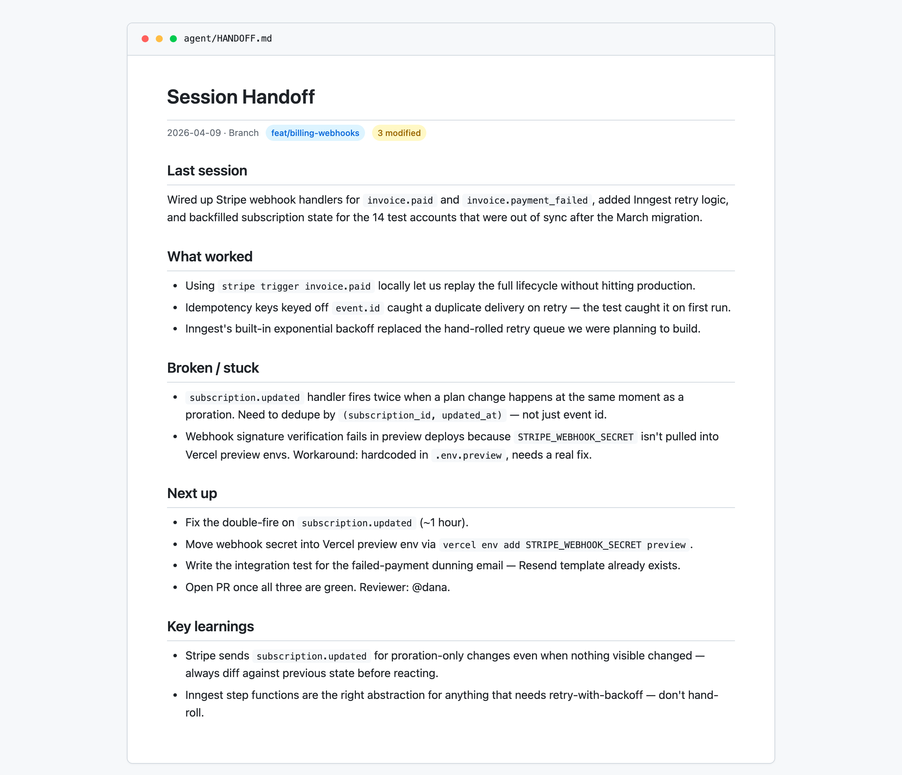
Use this when...
- You're wrapping up a session and want the next one (maybe tomorrow, maybe a fresh Claude instance) to pick up without asking "what were we doing?"
- You're switching projects mid-day and need to stash state before context-switching
- You just figured something out the hard way and want the learning to persist across sessions, not die in a closed window
- You want handoff writing to happen in the background while you respond to Slack, not block your terminal
- You follow the "read HANDOFF.md on session start" pattern and need something writing to it consistently
What you say to Claude
/handoff
Or, if you want to explicitly capture a specific learning:
/handoff "Stripe subscription.updated fires twice on prorated plan changes
— always dedupe by (subscription_id, updated_at)"
Claude launches a background sub-agent, immediately confirms with "Handoff agent launched in background", and you can keep working or end the session. The agent runs git log, git status, git diff --stat, synthesizes what happened, and writes both files silently.
Install
# From the claude-toolkit repo
./install.sh --skills handoff # into current project
./install.sh --global --skills handoff # into ~/.claude (all projects)
After install, /handoff is available as a slash command. Claude also auto-invokes it when you say "wrap up", "end session", or "stash this for later".
New to skills? See the main README for a one-minute primer.
What you'll see
Two files in /agent/:
HANDOFF.md— point-in-time snapshot, overwritten each run. Branch, git status, summary, what was done, what remains, known issues, key decisions, relevant files, free-form context for the next session.MEMORY.md— append-only log of durable learnings, grouped by date. Never rewrites past entries; only appends under today's header if something non-obvious was learned.- Background execution — main chat never blocks. You get an immediate confirmation and a quiet completion message when the sub-agent finishes.
- Works outside git repos — skips git commands gracefully and writes what it can.
Why background
Session-end should be fast. Running the full handoff — reading git state, scanning recent commits, synthesizing a summary — inline would force you to wait 10-30 seconds before you could type "bye" and close the tab. A single background sub-agent does both the note and the snapshot sequentially (one agent, not two, to avoid race conditions on MEMORY.md) while you're free to do anything else.
See also
Turn a rough feature idea into a structured Product Requirements Document with lettered clarifying questions, numbered requirements, and verifiable acceptance criteria — saved as markdown, ready to hand to a junior dev or an autonomous agent.
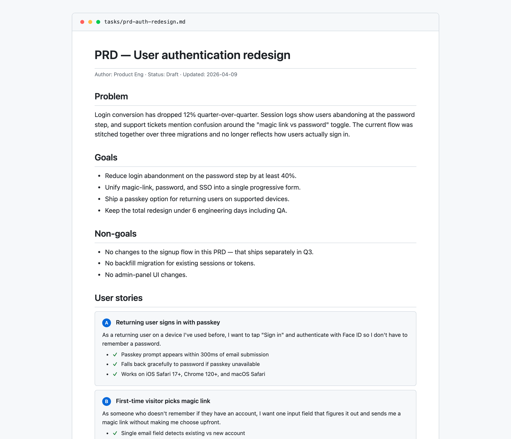
Use this when...
- You're starting a new feature and want to pressure-test the idea before anyone writes code
- You need a doc that's specific enough for a junior dev or an LLM to implement without guessing
- You want acceptance criteria that are actually verifiable, not "works correctly" hand-waving
- You're about to kick off an autonomous coding loop (Ralph, Aider, Devin) and need a PRD the agent can turn into tasks
- You want to force the scope conversation upfront — what's in, what's out, what the success metric is
What you say to Claude
Write a PRD for a notifications bell — users should see unread
counts, click to open a dropdown of recent items, and mark them
as read. Ship it to the toolkit dashboard.
Claude asks 3-5 clarifying questions with lettered options (e.g., "1. Target user? A. All users B. Admins only C. ..."), you reply with "1A, 2C, 3B", and the PRD is saved to tasks/prd-notifications-bell.md with user stories small enough to each fit in a single focused session.
Install
# From the claude-toolkit repo
./install.sh --skills prd # into current project
./install.sh --global --skills prd # into ~/.claude (all projects)
After install, Claude auto-invokes this skill on phrases like "create a PRD", "spec out this feature", or "write requirements for...". You can also trigger it explicitly.
New to skills? See the main README for a one-minute primer.
What you'll see
The generated markdown file follows a strict structure designed for implementation, not for stakeholders:
- Clarifying questions first — lettered multiple-choice so you reply with "1A, 2C, 3B" instead of paragraphs
- Numbered functional requirements (
FR-1,FR-2, ...) you can reference from code comments and PRs - User stories with verifiable acceptance criteria — each story small enough for one focused session
- Explicit non-goals section — scope boundaries called out, not left ambiguous
- Success metrics that are measurable, not vibes ("login completion > 88%")
Every UI story automatically gets Verify in browser using dev-browser skill as an acceptance criterion, so frontend work isn't marked done until it's visually confirmed.
Why "lettered options"
Clarifying questions in free-form prose turn into a slow back-and-forth. Lettered options compress the round trip — Claude asks five questions at once, you answer with a 10-character reply, and the PRD generates immediately. If none of the options fit, the last choice is always "Other: [please specify]".
See also
Convert an existing PRD into the `prd.json` format the Ralph autonomous agent loop runs on — with dependency-ordered stories small enough to each fit in one Amp context window.
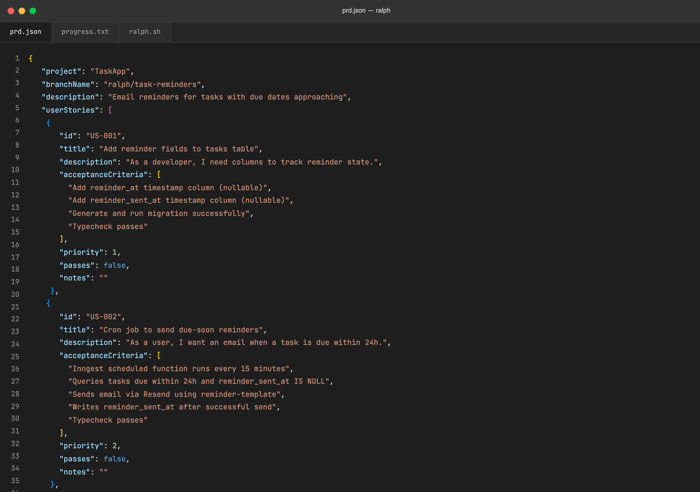
Use this when...
- You have a PRD already written (from the
prdskill or anywhere else) and need it in Ralph's JSON schema before kicking off a run - You want to split a big feature into iterations that each fit in a single context window, instead of watching Ralph run out of tokens mid-story
- You need to enforce dependency ordering — schema before backend, backend before UI, dashboards last
- You want every story to automatically carry "Typecheck passes" and (for UI work) "Verify in browser using dev-browser skill" as final acceptance criteria
- You're re-running Ralph on a different feature and need the previous run archived before overwriting
prd.json
What you say to Claude
Convert tasks/prd-task-reminders.md into prd.json for ralph.
Or paste PRD text directly:
Turn this into ralph format: [paste PRD]
Claude reads the PRD, splits anything too big into per-iteration stories, orders them by dependency, adds the required final criteria, and writes prd.json to your ralph directory. If a previous run exists under a different branchName, it archives it to archive/YYYY-MM-DD-feature-name/ first.
Install
# From the claude-toolkit repo
./install.sh --skills ralph # into current project
./install.sh --global --skills ralph # into ~/.claude (all projects)
After install, Claude auto-invokes on phrases like "convert this PRD", "turn this into ralph format", or "create prd.json from this".
New to skills? See the main README for a one-minute primer.
What you'll see
A valid prd.json that drops straight into your Ralph workflow:
- Sequential story IDs (
US-001,US-002, ...) withprioritymatching dependency order - Stories small enough for one iteration — rule of thumb: if it can't be described in 2-3 sentences, it's too big and gets split
- Verifiable acceptance criteria — no "works correctly", only things Ralph can actually check
- Auto-appended final criteria —
"Typecheck passes"on every story,"Verify in browser using dev-browser skill"on UI stories passes: falseand emptynoteson every story so Ralph starts fresh
The number one rule
Each story must be completable in one Ralph iteration. Ralph spawns a fresh Amp instance per iteration with no memory of previous work — if a story is too big, the LLM runs out of context mid-implementation and produces broken code. The skill errs aggressively on the side of splitting: "Add authentication" becomes six stories (schema, middleware, login UI, session, logout, password reset), not one.
See also
Turn research, analysis, or session findings into a polished editorial-style HTML report — Newsreader serif, inline links, dropcap lead, pull quotes — saved to `~/Documents/Claude Reports/`.
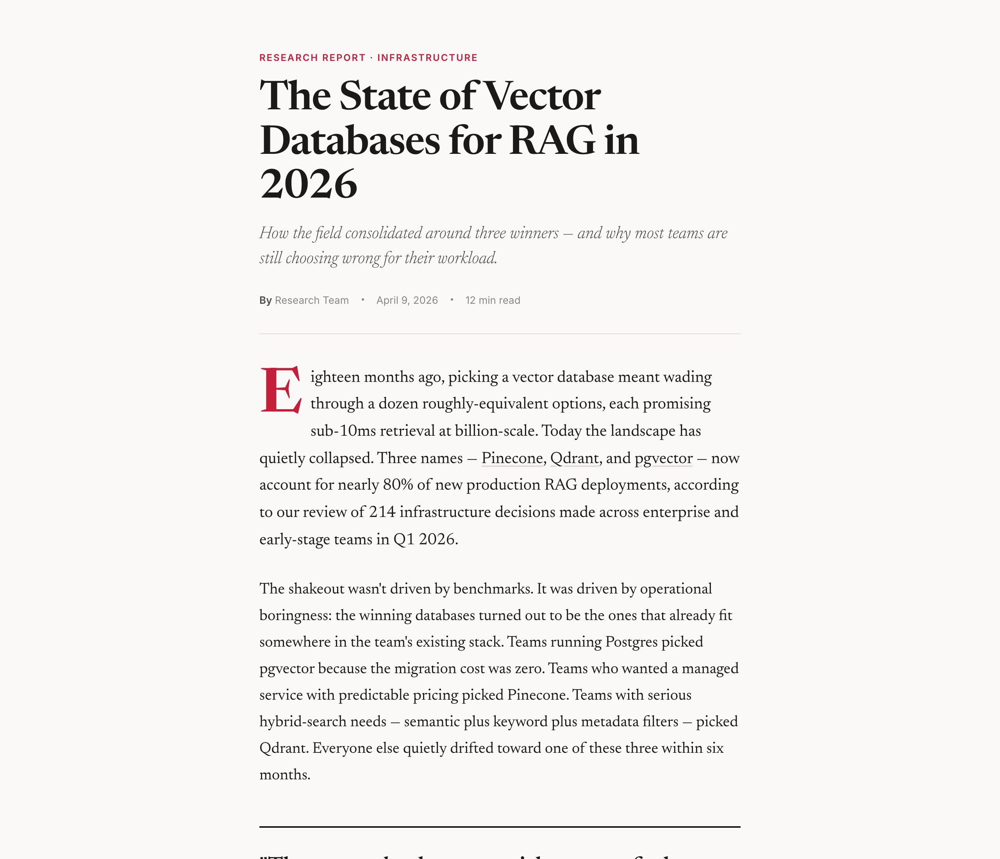
Use this when...
- You just finished a research run, competitive analysis, or architecture review and want it to read like a real article, not a markdown dump
- You need to share findings with a non-technical stakeholder who won't open a
.mdfile - You want a report that lives outside any git repo — discoverable in Finder, indexed by Spotlight, never accidentally committed
- You want every tool, product, and video mentioned to be a clickable link, not a bare footnote at the bottom
- You want the option to reroll the visual theme (
--fresh) so every report doesn't look identical
What you say to Claude
Write this up as an html report — "The State of Vector Databases for RAG in 2026"
Claude parses the research already in the session (or reads a markdown file you pass in), extracts the structure — executive summary, findings, recommendations, sources — and writes a self-contained HTML file to ~/Documents/Claude Reports/vector-databases-rag-2026-04-09.html, then opens it in your browser. Pass --fresh to randomize the typography, color palette, and layout.
Install
# From the claude-toolkit repo
./install.sh --skills html-report # into current project
./install.sh --global --skills html-report # into ~/.claude (all projects)
After install, Claude invokes this skill automatically when you ask for a "report", "write-up", or "summary page" — and it chains naturally after /research-orchestrator or /last30days. You can also trigger it explicitly with /html-report.
New to skills? See the main README for a one-minute primer.
What you'll see
The generated HTML file is fully self-contained (Google Fonts only, no JS dependencies) and includes:
- Editorial masthead with kicker, headline, italic subtitle, byline, and date
- Dropcap lead paragraph followed by prose in 20px Newsreader serif at a 680px column
- Numbered findings with HIGH / MEDIUM confidence tags and a pull quote for the strongest insight
- Inline links on every tool, product, and video — no "Sources" section at the bottom, every reference is contextual
- Components that appear only if the content needs them — decision matrices, cost cards, roadmap timelines, recommendation grids
The two modes
Default editorial — warm off-white background, deep red accent, Newsreader serif headlines, Inter for labels. Every report looks like it came out of the same publication.
--fresh theme system — on every invocation, Claude picks one option from each of five pools (font pairing, color palette, layout mode, background treatment, component styling) seeded by the date and title. The content structure stays identical; the "outfit" changes. Useful when you're generating several reports and want them to feel distinct at a glance.
See also
research-orchestrator— the upstream skill that produces the structured findings this report renderslast30days— another upstream skill; its multi-source synthesis output pipes directly into/html-report
One-shot project bootstrap that wires up the frontend-design skill, the skill-creation tools, and an `/agent/` scaffold — a setup ritual, not an artifact generator.
What this sets up:
- Frontend-design skill enabled for distinctive, production-grade UI work with a real aesthetic point of view
- Skill-creation tools wired up so you can author project-specific skills in
.claude/skills/without Googling the frontmatter /agent/scaffold for the HANDOFF / MEMORY / WORKFLOWS pattern used by other toolkit skills- Optional extras — additional toolkit skills, hooks, project-specific slash commands, all offered interactively
Use this when...
- You're starting a new project and want AI-powered dev tooling available from commit #1 instead of bolting it on later
- You just cloned a repo that doesn't have
.claude/yet and want the standard setup applied in one step - You want frontend-design active by default so "build me a landing page" produces real design, not generic AI slop
- You need the
/agent/directory pattern (HANDOFF.md, MEMORY.md, WORKFLOWS.md) ready to go before your first session - You're onboarding a teammate and want them running the same setup you have, not a guess-and-check approximation
What you say to Claude
/init
Claude asks a few questions — "What kind of project is this? Do you need frontend design capabilities? Do you want to create custom skills?" — and then enables the relevant skills, creates the .claude/ directory structure, and tells you what was installed. Re-running /init later is safe and only adds new capabilities.
Install
# From the claude-toolkit repo
./install.sh --skills init # into current project
./install.sh --global --skills init # into ~/.claude (all projects)
After install, /init is available as a slash command. Unlike most skills, init is rarely auto-invoked — it's deliberately a user-triggered ritual you run once at project start.
New to skills? See the main README for a one-minute primer.
What you'll see
Init is a setup ritual with no artifact — no file gets "generated" the way prd or handoff produce a markdown file. Instead:
.claude/directory created with the requested skills wired in/agent/scaffold ready for the HANDOFF / MEMORY / WORKFLOWS pattern- Confirmation of what's enabled — a short summary of skills active in this project
- Recommended next steps — "try
create a landing page for X" or "run/handoffat the end of your session"
The goal is that after /init, you can immediately say "build me the dashboard" or "create a PRD for notifications" and everything just works.
Why no hero image
Every other skill in the toolkit produces something visual you can screenshot — a mockup, a PRD, a QA checklist. Init produces a project setup, which is invisible by design. The whole point is that when you're done, nothing changed in the UI — you just have more tools available in the chat. A screenshot of an empty .claude/ directory would be misleading.
See also
Generate a single-file HTML report of your Claude Code harness — skills, hooks, tool usage, token spend, and workflow patterns across the last 30 days.
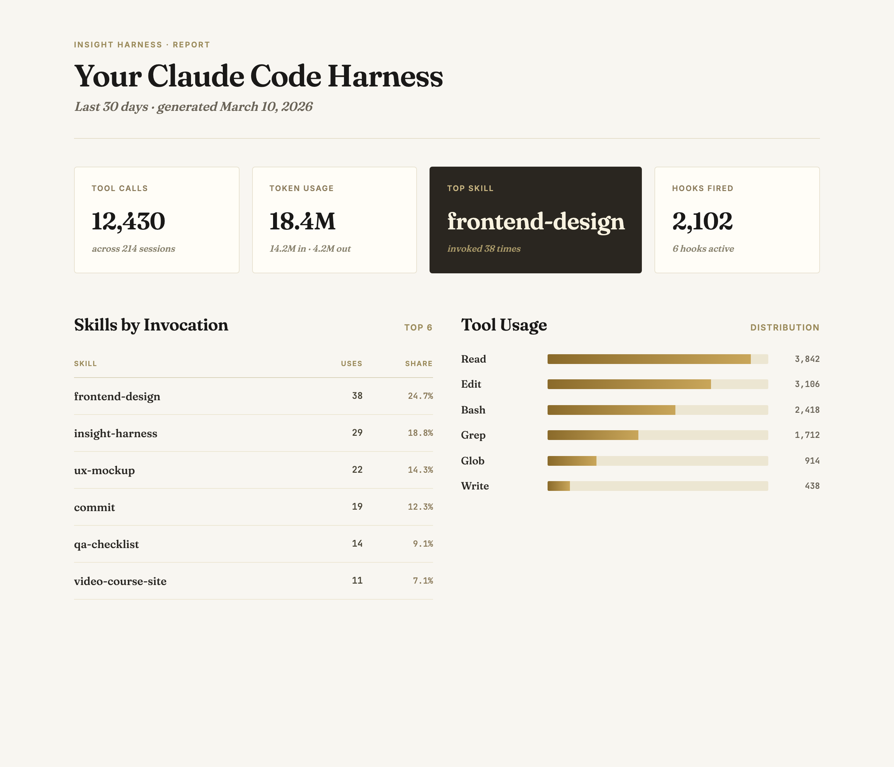
Use this when...
- You're curious which skills you actually invoke vs. the ones sitting dormant in
~/.claude/skills/ - You want to see your token spend and tool-usage breakdown without digging through raw JSONL session logs
- You're tuning your harness and want to know which hooks fire most and how often
- You want a superset of
/insights— same stats plus skills, hooks, plugins, MCP servers, and workflow phase transitions - You want a shareable HTML file you can upload to insightharness.com to compare setups with other Claude Code users
What you say to Claude
Run an insight-harness report on my setup.
Claude runs the extraction script against ~/.claude/ and opens the generated HTML in your browser. The report lands at ~/.claude/usage-data/insight-harness.html. The script uses a strict field whitelist — it never reads tool arguments, message text, tool results, or file paths from your session logs.
Install
# From the claude-toolkit repo
./install.sh --skills insight-harness # into current project
./install.sh --global --skills insight-harness # into ~/.claude (all projects)
Or install and run in one line without cloning the repo:
mkdir -p ~/.claude/skills/insight-harness/scripts && \
curl -sL https://raw.githubusercontent.com/<your-username>/claude-toolkit/main/skills/insight-harness/SKILL.md \
-o ~/.claude/skills/insight-harness/SKILL.md && \
curl -sL https://raw.githubusercontent.com/<your-username>/claude-toolkit/main/skills/insight-harness/scripts/extract.py \
-o ~/.claude/skills/insight-harness/scripts/extract.py && \
open "$(python3 ~/.claude/skills/insight-harness/scripts/extract.py)"
After install, Claude will invoke this skill automatically when you mention "insight harness", "harness profile", "my setup", or "what skills do I use". New to skills? See the main README for a one-minute primer.
What you'll see
- Top-line stat cards — total tool calls, input/output token usage, top skill by invocation, hooks fired
- Skills by invocation — which skills you actually reach for, ranked with percent share
- Tool usage breakdown — Read, Edit, Bash, Grep, Glob, Write with counts
- Workflow phase distribution — exploration, implementation, testing, shipping, orchestration across sessions
- Phase and tool transitions — most common sequences (e.g.
Read -> Edit,exploration -> implementation) with "test-before-ship" discipline stats - Full inventory — installed plugins, configured hooks, MCP servers, permission modes, models used
See also
ux-mockup— another "the deliverable is one HTML file" skill, for stakeholder design reviewvideo-course-site— a third HTML-as-output skill, for turning course videos into a readable static site
Turn a folder of video lectures into a readable, tabbed static site where each video becomes a blog post in the teacher's own voice.
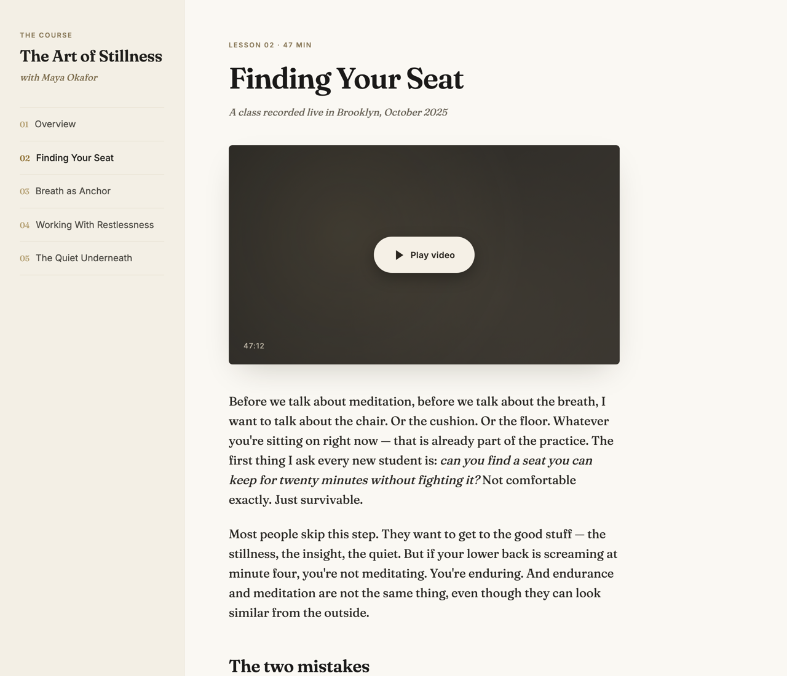
Use this when...
- You're sitting on hours of recorded course videos and want something readable people can skim, not just play
- You're a teacher or student who wants each lesson as a blog post in the teacher's first-person voice, not a cold summary
- You need Q&A and guided meditations pulled out as their own sections, with timestamps back to the video
- You want a single-file static site you can drop in Dropbox, email, or host anywhere — no build step, no CMS
- You want a pipeline that skips work it's already done so you can rerun it on new videos without starting over
What you say to Claude
I have a folder of course videos at ~/Dropbox/courses/stillness-oct-2025.
Transcribe them, turn each one into a blog post in the teacher's voice,
and assemble a tabbed site I can share.
Claude runs the three-step pipeline — transcribe with whisper.cpp, dispatch one agent per transcript to write a blog post, assemble into <folder>/site/index.html with sidebar tab nav and Medium-style typography. Open the file and share it.
Install
# From the claude-toolkit repo
./install.sh --skills video-course-site # into current project
./install.sh --global --skills video-course-site # into ~/.claude (all projects)
After install, Claude will invoke this skill automatically when you mention "course site", "transcribe videos", "video to blog", or "turn these lectures into posts". New to skills? See the main README for a one-minute primer.
Requires: ffmpeg (brew install ffmpeg), whisper.cpp (brew install whisper-cpp), and the large-v3-turbo model downloaded to ~/whisper-models/ggml-large-v3-turbo.bin. Transcription runs locally — no API keys.
What you'll see
- Sidebar lesson nav — numbered tabs (01, 02, 03...) switch between lessons in-place
- Per-lesson blog post — written in the teacher's first-person voice, not a summary
- Pulled-out Q&A blockquotes — student questions in bold, teacher answers inline
- Meditation markers — guided meditations transcribed with timestamps back to the source video
- Idempotent reruns — skip already-transcribed videos and already-written posts; add a new video and rerun
The three-step pipeline
Step 1 — Transcribe. scripts/transcribe_videos.py extracts audio via ffmpeg, runs whisper.cpp, and writes .json/.srt/.txt into <folder>/transcripts/. Long jobs can run backgrounded with nohup caffeinate.
Step 2 — Generate posts in parallel. Claude dispatches one agent per transcript. Each agent reads the .txt, writes an HTML fragment (<h2> title, <h3> sections, <blockquote> for Q&A, meditation-marker divs) to a local staging dir. If your source is in Dropbox, posts stage locally first so smart-sync can't dehydrate them to 0 bytes.
Step 3 — Assemble. scripts/assemble_site.py reads every .html fragment, builds the tab nav, and writes the final single-file site/index.html.
See also
ux-mockup— same self-contained HTML pattern, but for iterating on designs with stakeholder feedbackinsight-harness— another "one HTML file is the deliverable" skill, pointed at your own Claude Code usage data
Build a single-file public HTML showcase of a collection of Claude Code skills — table of contents, category grouping, custom-vs-plugin badges, PII scrubbing.
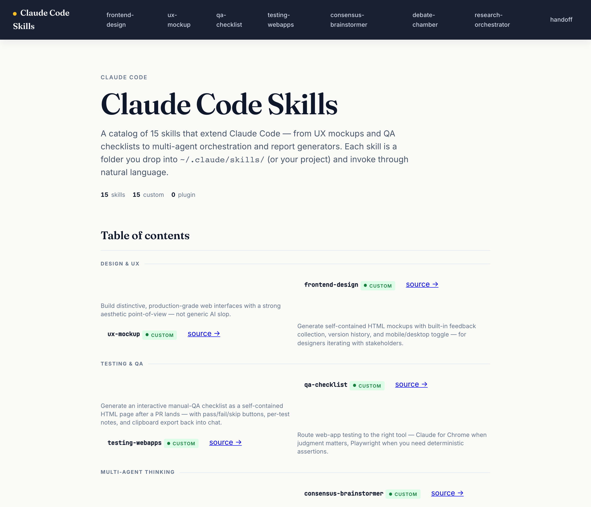
Use this when...
- You want to publish a portfolio of the skills you've built so other people can see what's possible with Claude Code
- You want a single HTML page you can host anywhere (GitHub Pages, S3, Vercel, a static file share) without a build step or dependencies
- You need to share your skills externally without leaking personal info — repo paths, GitHub username, real name, project names, etc.
- You want a visual inventory of what's installed in
~/.claude/skills/, clearly separated into skills you authored vs skills pulled from plugins - You have a repo full of skill folders and want an index page with screenshots, not just a plain README list
What you say to Claude
Use skill-showcase to build a public page for all the custom
skills in this repo. Exclude the half-finished ones.
Claude scans the skills directory, groups skills by category, renders each README with its hero image inline, scrubs your name and GitHub username, and writes a single HTML file at docs/showcase/skills.html. Then it opens the file in your browser.
To point it at a different location:
Build a skill showcase from ~/.claude/skills/ and write it
to ~/Sites/skills.html.
Install
# From the claude-toolkit repo
./install.sh --skills skill-showcase # into current project
./install.sh --global --skills skill-showcase # into ~/.claude (all projects)
After install, Claude will invoke this skill when you ask to "showcase my skills", "build a skill gallery", "make a public page for these skills", or similar phrasing. The reference build script lives at scripts/build-showcase.js and can also be run directly with node.
New to skills? See the main README for a one-minute primer.
What you'll see
- A single self-contained HTML file — all CSS and JS inline, works offline, hosts anywhere
- Hero section with title, short description, and a count of total / custom / plugin skills
- Table of contents grouped by category, with a one-line tagline and a badge under every skill
- Full skill sections below, each with its hero image and the complete README rendered inline
- Custom vs Plugin badges — green
● Customfor skills you authored, blue◆ Pluginfor skills pulled from a plugin cache, with the plugin name if it can be determined - Optional
source →links to the public GitHub source of each skill — opt-in, only rendered when you pass--base-repoor setrepo:in a skill's frontmatter (see below) - PII scrubbed — your real name, GitHub username, and personal file paths are replaced with placeholders before the page is written, and a final grep verifies nothing slipped through
How PII scrubbing works
Before rendering each README, the skill pulls identifiers from your environment and replaces them in memory (the original files are never modified):
- Your git name (from
git config user.name) — removed, with possessive forms replaced by "Your" - Your git email →
<your-email> - Home directory paths like
/Users/you/or/home/you/→~/ - GitHub usernames in URLs — the skill detects owners from
github.com/<owner>/patterns in the combined content and replaces them with<your-username>
After writing the output, the skill greps the final HTML for all detected identifiers and fails loudly if anything leaked. Hero images are not scrubbed — the skill cannot edit rasterized pixels. If a hero contains PII in its rendered text (e.g. a dashboard with your name in the title), regenerate that hero before running the showcase.
Linking to public source (opt-in)
If you want the showcase to link to your actual public repo — because you're sharing it and want viewers to be able to fork the code — pass --base-repo:
node skills/skill-showcase/scripts/build-showcase.js \
--skills-dir ./skills \
--output ./docs/showcase/skills.html \
--base-repo https://github.com/<your-username>/claude-toolkit/tree/main/skills
Every skill in the output gets a small source → link next to its badge, pointing to github.com/<your-username>/claude-toolkit/tree/main/skills/<skill-id>. Without --base-repo, no source links are rendered at all.
Per-skill overrides — in a skill's SKILL.md frontmatter:
repo: noneorrepo: private— suppresses the source link for that specific skill (use this for skills you authored but don't want to share)repo: https://github.com/<your-username>/other-repo/tree/main/skills/that-skill— uses that URL instead of the--base-repodefault (use this for skills that live in a different repo)
Skills with no frontmatter repo: field use --base-repo if provided, otherwise no link.
The --base-repo URL is not scrubbed. The sanitizer protects against accidental leaks in README content, but passing --base-repo is an intentional opt-in — if you include your GitHub username in the URL, it will appear in the output.
Self-test
The script ships with a --self-test flag that runs fixtures through the full pipeline and verifies the invariants that protect the sanitize step:
node skills/skill-showcase/scripts/build-showcase.js --self-test
The self-test runs 3 fixtures (fence-preservation, pii-scrubbing, edge-cases) and asserts:
- The sanitize pass preserves newlines exactly (never collapses them — this was a real v0 bug)
- The sanitize pass preserves fenced code block boundaries exactly
- Rendered HTML contains none of the synthetic PII canaries embedded in the fixtures
Run this after modifying the sanitizer or adding new replacement patterns. If you add a new pattern, also add a canary entry to fixtures/pii-scrubbing/README.md and to runSelfTest() in the script, so your change is tested going forward.
Exits 0 on success, 2 on any failure. See SKILL.md for the full list of pitfalls the invariants were built to catch.
See also
ux-mockup— same single-file-HTML philosophy, but interactive and for feedback collection rather than public presentationhtml-report— turn research or analysis content into a polished HTML page (different use case: one document, not an inventory)insight-harness— generate a profile of YOUR harness setup (private, for you), vs skill-showcase which generates a PUBLIC gallery of skills